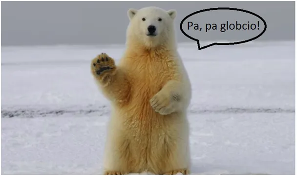
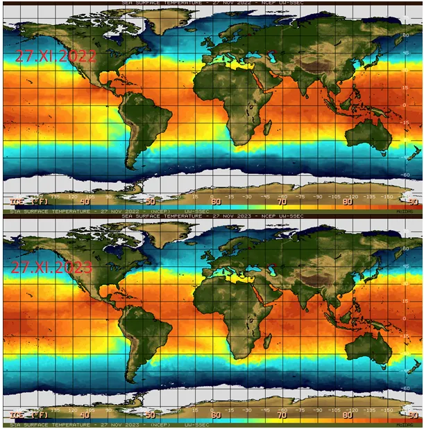
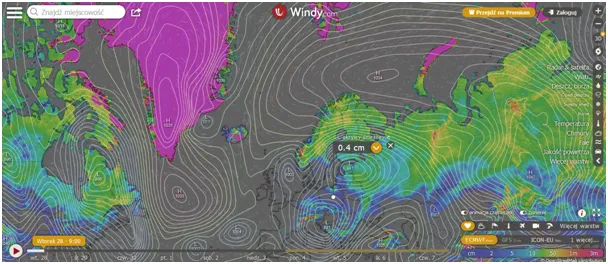
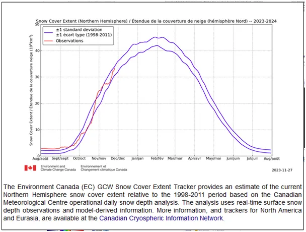
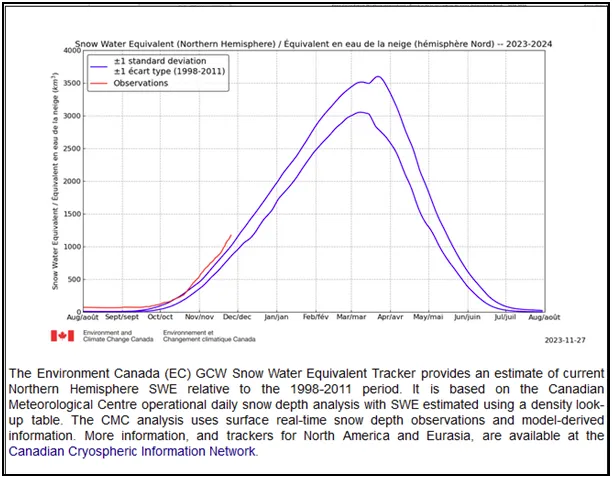
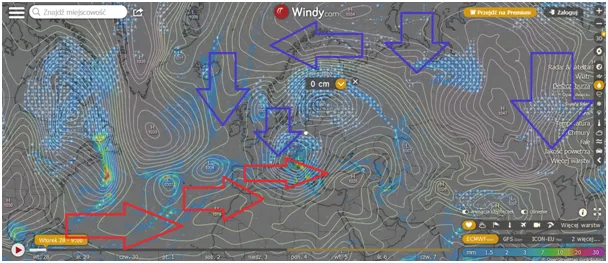
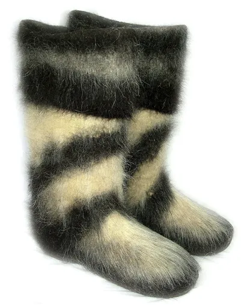

Pa, pa globcio! Zimno, ciemno i co dalej?
Globalne ochłodzenie, czy ocieplenie musi trwać długie dekady, a nawet setki lat, aby określić je mianem zjawiska, czy epoki. To, co obserwujemy w pogodzie w okresie życia nawet kilku pokoleń to naturalna zmienność złożonych zjawisk fizycznych. Ich granice są wąskie, ale na tyle szerokie, aby dostarczać nam coraz to nowych wrażeń i powodów, by nie popadać w rutynę.
Mapki poniżej to 27 listopada 2022 i ta sama data 2023, temperatura powierzchni oceanów i zlodowacenie. Morze Śródziemne znacznie chłodniejsze niż rok temu, w Arktyce z wyjątkiem Kanady i więcej lodu.

Na mapce kolorowej (3) pokrywa śniegu. Dwa kolejne wykresy nie pozostawiają złudzeń. Powierzchnia pod śniegiem na północnej półkuli na poziomie maksimum ostatnich dekad. Co ważniejsze ilość wody uwięzionej w śniegu na naszej półkuli od początku sezonu w ilości rekordowej a "ciągle pada" i szybko śniegu przybywa.

Prognozy na kilka tygodni to niże wyciągające ciepło z oceanów na południu i wyrzucające je w Kosmos, a ostudzoną wodę w postaci śniegu na olbrzymich przestrzeniach Azji, Ameryki i Europy. Skandynawia z wyjątkiem południowej Szwecji cała pod grubym śniegiem, podobnie jak Kaukaz i wschodnia Turcja.

Lada dzień Niemcy i Benelux schowają się pod białym puchem a potem całe Bałkany łącznie z europejską częścią Turcji na południe od Bułgarii. Słyszałem już od wyznawcy kultu AZK ("Antropogenezy Zmiany Klimatu), że po "rekordowo" ciepłym lecie to "normalne", czyżby "globalne ocieplenie było tylko latem, a zimą szło spać z niedźwiedziami?

Rachunki za ogrzewanie ciężkiej i długiej zimy od połowy listopada przyjdą w marcu, elektorat usłyszy wtedy: "wicie, rozumicie, Rosjanie mają brzydki, tani, cuchnący onucami gaz, Palestyńczycy sieją niepokój i drożeje ropa, macie szczęście, że Obajtek dokłada do diesla, co musi drogo u naszych najlepszych sojuszników kupować, bo byście w walonkach pieszo po śniegu chodzili."

Prognozy w mainstreamie, na miesiąc do przodu, jakie to będą w grudniu święta to opowieści o "żelaznym wilku".

Jesteśmy w okresie dynamicznej wymiany ciepła, miedzy południem i północą i nikt nie wie, co będzie za dwa tygodnie. Koniec grudnia może przynieść pluchę lub trzaskające mrozy. Pożyjemy, zobaczymy. Jedno, co wiadomo o przyszłości, to tyle, co zrobi fajnego nieistniejący rząd Tuska z siedzibą koło Pułtuska.
Paweł Klimczewski